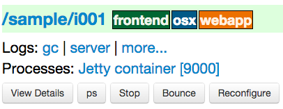

Console¶
The glu console is a web application that offers a graphical presentation on top of the orchestration engine.
Console in action¶
The best way to get a feel of what the console looks like and what can be achieved, take a look at the tutorial.
Installation¶
The distribution generation phase generates a full web application container (jetty) that is ready to be used.
Console as a server¶
Simply follow Step 5: Install the distributions in order to install the server that was generated for you.
Tip
This is the recommended way for deploying the console.
Console as a war¶
If you want to deploy the console in another web container then do the following:
generate the distributions the normal way
then create the war file manually:
cd <outputFolder>/consoles/org.linkedin.glu.console-server-<version>/ cd glu/repository/exploded-wars/org.linkedin.glu.console-webapp-<version>/ jar cfm /tmp/org.linkedin.glu.console-webapp-<version>.war META-INF/MANIFEST.MF *make the configuration file that was generated (<outputFolder>/consoles/org.linkedin.glu.console-server-<version>/glu-console-webapp.groovy) available to your application server by using one of the following 3 techniques
- store it under $HOME/.org.linkedin.glu/glu-console-webapp.groovy
- store it under conf/glu-console-webapp.groovy (relative to wherever the VM user.dir is set to)
- pass a system property -Dorg.linkedin.glu.console.config.location=/fullpath/to/file (or use the JAVA_OPTIONS environment variable)
Configuration¶
The console is configured by defining the proper parameters (configTokens) in the meta model or providing the proper config-templates for more control.
Note
All code examples (unless noted otherwise) are showing extracts of the meta model.
Console <-> Agent Connection¶
The console (orchestration engine) talks to all the agents using a REST api over https (or http if you do disable security). If you define a set of keys for the fabric hosted by the console, then the communication will happen over https, otherwise it will happen over http:
// enable https communication
def keys = [
...
]
// disable https communication
// def keys = null
fabrics["myFabric"] = [
keys: keys,
console: 'myConsole',
...
]
consoles << [
name: 'myConsole',
...
],
]
Warning
Disabling the secure connection means that the agents will happily serve any request irrelevant of where it is coming from, which could be a serious security hole and as result is not recommended!
Plugins¶
The console (orchestration engine) behavior can be tweaked and or enhanced with the use of plugins. Check the Plugins section for details on how to create and install a plugin.
Warning
Since 4.1.0, restricting file access on an agent has been migrated to the StreamFileContentPlugin plugin and is now being configured by defining the properties:
consoles << [
name: 'myConsole',
...,
configTokens: [
plugins: """
// path to the root of the unrestricted location (empty means no restriction)
// this property is used by StreamFileContentPlugin
plugins.StreamFileContentPlugin.unrestrictedLocation = ""
// role for unrestricted
plugins.StreamFileContentPlugin.unrestrictedRole = 'ADMIN'
"""
]
],
Database¶
The console uses a database to store some of its data (like the audit log, user information, etc...). The built-in database that comes bundled with glu is HSQLDB. The default location of the database is under the database/prod folder at the root of the jetty server. You may want to change this location by modifying the following section in the configuration file:
consoles << [
name: 'myConsole',
...,
configTokens: [
dataSource: """
dataSource.dbCreate = "update"
dataSource.url = "jdbc:hsqldb:file:/path/to/database;shutdown=true"
"""
]
],
Warning
It is not recommended to use the HSQLDB database in a real production environment. Please consider using another database like MySql (see next section).
Example for a different database: MySql¶
Here are the steps to follow in order to use MySql instead of HSQLDB (the steps would be very similar for a different database!)
Download and install MySql on your system (don’t forget to start it!)
Connect to MySql and create the glu user:
sudo /usr/local/mysql/bin/mysql mysql> create database glu; mysql> show databases; mysql> create user 'glua'@'localhost' identified by 'password'; mysql> grant all on glu.* to 'glua'@'localhost';
Warning
This values are obviously just example values (they simply need to be plugged in the right place in the configuration file (see below)).
Edit the meta model in this fashion:
consoles << [ name: 'myConsole', ..., dataSourceDriverUri: 'http://jcenter.bintray.com/mysql/mysql-connector-java/5.1.25/mysql-connector-java-5.1.25.jar', configTokens: [ dataSource: """ def dataSourceUrl = "jdbc:mysql://hostWhereMySqlIsRunning/glu" dataSource.dbCreate = "update" dataSource.url = dataSourceUrl dataSource.logSql=false // set to true for details (+ open trace logging level) dataSource.dialect = "org.hibernate.dialect.MySQL5InnoDBDialect" dataSource.driverClassName = "com.mysql.jdbc.Driver" dataSource.username= "glua" // this is from the glu user creation step dataSource.password = "password" // this is from the glu user creation step """ ] ],
Tip
You may want to check the quick production meta model that comes bundled with glu as it demonstrates the configuration steps.
Start the console
You can check that MySql is being used:
mysql> use glu; mysql> show tables; +---------------------+ | Tables_in_glu | +---------------------+ | audit_log | | db_current_system | | db_deployment | | db_system_model | | db_user_credentials | | fabric | | role | | user | | user_permissions | | user_role | +---------------------+
Note
If you are experiencing the following issue with MySql:
2012/04/25 10:08:30.344 ERROR [JDBCExceptionReporter] The last packet successfully received
from the server was 73,329,213 milliseconds ago. The last packet sent successfully to the
server was 73,329,214 milliseconds ago. is longer than the server configured value of
'wait_timeout'. You should consider either expiring and/or testing connection validity
before use in your application, increasing the server configured values for client
timeouts, or using the Connector/J connection property 'autoReconnect=true' to avoid
this problem
it has been reported that in order to fix the issue, you can add the following configuration properties file:
dataSource.properties.validationQuery = "SELECT 1"
dataSource.properties.testWhileIdle = false
dataSource.properties.timeBetweenEvictionRunsMillis = 1800000
dataSource.properties.minEvictableIdleTimeMillis = 1800000
dataSource.properties.numTestsPerEvictionRun = 3
dataSource.properties.testOnBorrow = true
dataSource.properties.testOnReturn = false
Other databases: Oracle, PostgresSQL¶
Some databases (like Oracle and PostgresSQL) do not allow to have a table named USER. In order to use one of this database, you need to add the following property to the glu configuration file (console-server/conf/glu-console-webapp.groovy):
consoles << [
name: 'myConsole',
...,
configTokens: [
dataSource: """
... // dataSource configuration goes here
console.datasource.table.user.mapping = "db_user"
"""
]
],
Logging¶
The log4j section allows you to configure where and how the console logs its output. It is a DSL and you can view more details on how to configure it directly on the grails web site. If you want to provide your own log4j configuration simply edit the following section:
consoles << [
name: 'myConsole',
...,
configTokens: [
log4j: """
{
appenders {
file name:'file',
file:'logs/console.log',
layout:pattern(conversionPattern: '%d{yyyy/MM/dd HH:mm:ss.SSS} %p [%c{1}] %m%n')
}
... etc ...
}
"""
]
],
Note
This has nothing to do with the audit log!
LDAP¶
You can configure LDAP for handling user management in the console. See User management for details. Here is the relevant section in the configuration file:
consoles << [
name: 'myConsole',
...,
configTokens: [
ldap: """
ldap.server.url="ldaps://ldap.acme.com:3269"
ldap.search.base="dc=acme,dc=com"
ldap.search.user="cn=glu,ou=glu,dc=acme,dc=com"
ldap.search.pass="helloworld"
ldap.username.attribute="sAMAccountName"
"""
]
],
Security Levels¶
You can define your own security level (USER, RELEASE or ADMIN) per URL by defining a property like this:
console.security.roles.'<path>' = '<role>'
You can define your own security level (USER, RELEASE or ADMIN) per REST call by defining a property like this:
console.security.roles.'<method>:<path>' = '<role>'
Here are some examples:
consoles << [
name: 'myConsole',
...,
configTokens: [
security: """
// a URL for the web interface
console.security.roles.'/model/load' = 'USER'
// a REST call
console.security.roles.'POST:/rest/v1/$fabric/model/static' = 'RELEASE'
"""
]
],
Note
You can check the Config file for an exhaustive list of all the URLs and REST calls.
Tip
If you have more than one entry to change, you can use a simpler notation:
consoles << [
name: 'myConsole',
...,
configTokens: [
security: """
console.security.roles.putAll([
'/agents/kill/$id/$pid': 'ADMIN',
'/plan/execute/$id': 'ADMIN',
'/plan/filter/$id': 'ADMIN'
])
"""
]
],
Tip
You can customize or bypass entirely the way glu handles security by implemeting your own plugin
Tuning¶
Deployments auto-archive¶
The plans page displays the list of deployments that have happened recently. Since 3.3.0, items in this list are automatically archived after 30 minutes. You can tune this property or simply disable automatic archiving by adding the following property:
consoles << [
name: 'myConsole',
...,
configTokens: [
tuning: """
// set it to "0" if you want to disable auto archiving entirely
console.deploymentService.autoArchiveTimeout = "30m"
"""
]
],
Limiting the number of parallel steps¶
When running deployments in parallel, there is, by default, no limitation on how many steps can be executed at the same time. Depending on the size of your system, this may put a lot of stress on your infrastructure (like the network, binary repositories, etc...). In order to limit how many steps can run in parallel, you set it this way:
consoles << [
name: 'myConsole',
...,
configTokens: [
tuning: """
// The following property limits how many (leaf) steps get executed in parallel during a deployment
// By default (undefined), it is unlimited
console.deploymentService.deployer.planExecutor.leafExecutorService.fixedThreadPoolSize = 500
"""
]
],
Session timeout¶
You can change the session timeout by defining the following property (and as the name of the property implies, you need to provide the value in minutes):
consoles << [
name: 'myConsole',
...,
configTokens: [
sessionTimeoutInMinutes: 60 // 1 hour
]
],
Plan¶
Skipping missing agents¶
By default, a missing agent generates a noop entry in the plan, or in other words it is skipped when the plan runs. If you want to change this behavior and generate an entry (which will fail on execution), then change the following property to false:
consoles << [
name: 'myConsole',
...,
configTokens: [
misc: """
// set to false if you want missing agents to not be skipped anymore in plan computation
console.plannerService.planner.skipMissingAgents = true
"""
]
],
UI configuration¶
The UI is configured in the console.defaults section of the configuration file. It is a simple map:
console.defaults =
[
... configuration goes here ...
]
In order to use your own values, you can either provide (in the meta model) your entire console.defaults section:
consoles << [
name: 'myConsole',
...,
configTokens: [
'console.defaults': """
[
... configuration goes here ...
]
"""
]
],
or simply override specific values:
consoles << [
name: 'myConsole',
...,
configTokens: [
'console.defaults.override': """
console.defaults.customCss = ...
console.defaults.dashboardAgentLinksToAgent = true
...
"""
]
],
Note
The following sections will simply call out the specific entries within the console.defaults map, but you can use either method to change them.
Custom Css¶
If you want to customize the look and feel of the console and override or tweak any css value, you can provide your own custom css. Possible values are null (or simply non existent), String or URI:
// no custom css
customCss: null
// as a String (using groovy """ notation makes it convenient)
customCss: """
.OK {
background: green;
}
"""
// as a URI (for security reasons should be local!)
customCss: new URI("/glu/repository/css/custom.css")
Tip
Since 5.1.0 there is also another way to entirely change the css files. Check the Further customizations section.
Default Dashboard¶
See the section on how to configure the dashboard section of the configuration file.
Tags¶
You can specify the colors of each tag (foreground and background):
tags:
[
'__default__': [background: '#005a87', color: '#ffffff'],
'webapp': [background: '#ec7000', color: '#fff0e1'],
'frontend': [background: '#006633', color: '#f1f5ec'],
'backend': [background: '#5229a3', color: '#e0d5f9'],
],
Note
the __default__ entry is optional and specify the color of the tags that are not specifically defined
Note
the color value (ex: #005a87) ends up being used in css so you can use whatever is legal in css (ex: red)
Model¶
The model page displays a summary and the columns are configurable in the following section:
model:
[
agent: [name: 'agent'],
'tags.webapp': [name: 'webapp'],
'metadata.container.name': [name: 'container'],
'metadata.product': [name: 'product'],
'metadata.version': [name: 'version'],
'metadata.cluster': [name: 'cluster']
]
This configuration results in the following output:
model is a map with the following convention:
- the key represent the dotted notation of an entry (see: Filter syntax for more details and examples on the dotted notation)
- the value is a map with (currently) one entry only: name which represents the (display) name of the column
Note
Since 3.3.0, it takes effect only when showing a single model: for performance reasons the page which shows the list of models no longer fetches the model and as such cannot display this information
Non Editable Model¶
You can enable or disable the fact that a system model is editable or not by changing the following property:
disableModelUpdate: false,
By default, the model is editable which means that there is a Save Changes button and the text area containing the body is editable. Changing this value to true removes the button and makes the text area non editable anymore.
Note
Even if the model is not editable, it is always possible to load a new one by going to the Model tab. The idea behind this feature is to enforce the fact that the model should be properly versioned outside of glu and changing it should go through a proper flow that is beyond the scope of glu.
Shortcut Filters¶
This entry allows you to define a dropdown that will be populated based on the model metadata in order to quickly set a filter. In the screenshot below, clicking on 'product2:2.0.0' in the dropdown is equivalent to removing the current filter on product1 and adding a new one for product2 simplifying going back and forth between globally used concepts (like teams or product lines or zones, etc...):
shortcutFilters:
[
[
name: 'product',
source: 'metadata.product',
header: ['version']
]
]
This configuration results in the following output:
The format of this entry is an array of maps (so you can have more than one!) where each map consists of:
- a name entry which will be displayed in the dropdown when no filter entry is selected All [<name>]
- a source which represents a dotted notation of which data to use in the model. The data in the model should have the following structure:
- the key is the value of the filter
- the value is another map with the following convention:
- name is the display name of the value (in this example they are the same!)
- other entries that are used in the header section (see below)
- a header entry which is an array for extra information referring to entries in the metadata (see above)
Example of model which produces the previous screen:
"metadata": {
"product": { <================ value as defined in the model section (name: 'product')
"product1": { <============= first entry (value for the filter!)
"name": "product1", <===== display name of the value
"version": "1.0.0" <===== extra info as defined in the model section (header: ['version'])
},
"product2": { <============= second entry (value for the filter!)
"name": "product2", <===== display name of the value
"version": "2.0.0" <===== extra info as defined in the model section (header: ['version'])
}
}
}
Header¶
This entry allows you to add more information to the header in the console:
header:
[
metadata: ['drMode']
]
This entry simply contains a metadata section which is an array of keys in the metadata of the model (not of an entry).
Example of model:
"metadata": {
"product": {...},
"drMode": "primary"
}
The previous model and header configuration produce the following output:
Tip
Since every fabric has its own model, hence its own metadata section, this feature is a convenient way to display fabric specific information. In this example we can display which fabric represents the primary data center versus which one represents the secondary data center.
Dashboard Agent Links¶
By default (new since 4.0.0), a link to an agent name in the dashboard has the same effect as all other links on the dashboard: it adds a filter. In this case it filters the model to see only the entries on this specific agent. The top level 'Agents' tab allows you to navigate to the agent view. If you want to turn this off (thus reverting to the behavior prior to 4.0.0) use this entry (dashboard section of the configuration file):
dashboardAgentLinksToAgent: true
Plans¶
This (optional) entry allow you to configure what gets displayed in the table when you select the Plans subtab. Example (using the custom state machine as defined in the Defining your own state machine section):
plans: [
[planType: "deploy"],
[planType: "redeploy"],
[planType: "undeploy"],
[planType: "transition", displayName: "* -> s1", state: "s1"],
[planType: "transition", displayName: "* -> NONE", state: "NONE"],
],
The standard plan types are: deploy, redeploy, undeploy, bounce and transition (which requires a state attribute).
Tip
By using the plugin hook PlannerService_pre_computePlans you can add your own plan types!
MountPoint actions¶
This (optional) entry defines the actions available for a given mountPoint on the agents page. Example (using the custom state machine as defined in the Defining your own state machine section):
// - key is "state of the mountPoint" (meaning, if the state of the mountPoint is "<key>" then
// display the actions defined by the value)
// * The key "-" is special and is reserved for the actions to display when the state does
// not have an entry (in this example, everything besides running).
// * The key "*" is special and is reserved for the actions to display all the time.
//
// - value is a map defining what to do (ex: bounce, undeploy) as well as extra informations
mountPointActions: [
s2: [
[planType: "transition", displayName: "s2 -> s1", state: "s1"],
[planType: "transition", displayName: "s2 -> NONE", state: "NONE"],
],
// all other states
"-": [
[planType: "transition", displayName: "Start", state: "s2"],
],
// actions to include for all states
"*": [
[planType: "undeploy", displayName: "Undeploy"],
[planType: "redeploy", displayName: "Redeploy"],
]
],
The standard plan types are: deploy, redeploy, undeploy, bounce and transition (which requires a state attribute).
Tip
By using the plugin hook PlannerService_pre_computePlans you can add your own plan types!
Tail¶
This section defines the default size and refresh rate (how long between polls) for the tail feature:
tail: [
size: '10k', // size to use when tailing a file by default (MemorySize)
refreshRate: '5s' // how long between polls (Timespan)
],
Features¶
This section allows you to enable/disable certain features:
features:
[
commands: true
],
commands is the feature which allows you to run any kind of (unix/shell) command on an agent. You can disable this feature entirely in which case it will not be present in the UI at all.
Note
This feature also has an agent side to it and it needs to be properly configured as well. Check the agent configuration section.
Commands¶
If the commands feature is enabled, then you can configure what happens with the result (IO) of the command execution:
consoles << [
name: 'myConsole',
...,
configTokens: [
'console.defaults.override': """
def commandsDir =
System.properties['org.linkedin.glu.console.commands.dir'] ?: "${System.properties['user.dir']}/commands"
// storage type supported right now are 'filesystem' and 'memory'
console.commandsService.storageType = 'filesystem'
// when storage is filesystem => where the commands are stored
console.commandsService.commandExecutionIOStorage.filesystem.rootDir = commandsDir
// when storage is memory => how many elements maximum to store (then start evicting...)
console.commandsService.commandExecutionIOStorage.memory.maxNumberOfElements = 25
"""
]
],
Note
By default, the IO of a command is stored on the filesystem in a path structure that is like this. This allows for easy maintenance!:
.../commands/<yyyy>/<mm>/<dd>/<HH>/<z>/<commandId>/*
Example:
.../commands/2012/11/15/07/PST/13b0533729f-18c3a1e8-2a19-4291-a161-77155d9472ae/command.json
.../commands/2012/11/15/07/PST/13b0533c29c-be265ce6-2d61-4502-acf8-978e18580cbe/command.json
.../commands/2012/11/15/07/PST/13b0533f383-0f61f819-6a0f-4639-9695-8060a13799c4/command.json
Dashboard¶
The dashboard is the main entry point of the console and is a visual representation of the delta.
Customization¶
Since 4.0.0, the dashboard can be customized by every user the way they see fit. Every user can also define as many dashboards as they want and the dropdown allows to switch between dashboard quickly.
The easier way to create a new dashboard is to add filters and group by columns (by clicking on a column name) and then select 'Save as new'. The new dashboard can then be further customized by clicking on the 'Customize' subtab which shows the definition of the dashboard as a json document:
{
"columnsDefinition": [
{
"groupBy": "uniqueCountOrUniqueVal",
"linkable": true,
"name": "cluster",
"orderBy": "asc",
"source": "metadata.cluster",
"visible": true
},
... etc ...
],
"customFilter": "metadata.cluster='c1'",
"errorsOnly": false,
"name": "c1 cluster",
"summary": false
}
- name: the name of the dashboard (will be displayed in the dropdown)
- errorsOnly: to display only rows that are in error
- summary: to display a summary view when there are more than one row with the same value (based on the first column). When this value is set to true then the groupBy entry of a column definition kicks in
- columnsDefinition is an array which defines each column. The order in the array defines in which order columns will be displayed so it is easy to move columns around by simply moving them in the array. Each column is defined this way:
- name: the name of the column as it appears in the dashboard
- source: which data in the model needs to be displayed using the dotted notation (see: Filter syntax for more details and examples on the dotted notation)
- orderBy: how to sort the column. Possible values are: asc / desc / null (null means ignore for sorting purposes)
- groupBy: how to group rows when using a summary view. Possible values are: uniqueVals / uniqueCount / uniqueCountOrUniqueVal / vals / count / min / max
- linkable: whether a link to add a filter should be displayed
- visible: whether the column should be visible at all (useful mostly internally for derived values)
Default Dashboard¶
When a user logs in the first time it is assigned a default dashboard. This dashboard is defined in the configuration file under the defaults.dashboard section and can be a json string or a simple groovy array of columnsDefinition as defined previously. This is the one that comes by default:
dashboard:
[
[ name: "mountPoint", source: "mountPoint" ],
[ name: "agent", source: "agent"],
[ name: "tags", source: "tags", groupBy: "uniqueVals"],
[ name: "container", source: "metadata.container.name"],
[ name: "version", source: "metadata.version"],
[ name: "product", source: "metadata.product"],
[ name: "cluster", source: "metadata.cluster"],
[ name: "status", source: "status" ],
[ name: "statusInfo", source: "statusInfo", groupBy: "vals", visible: false],
[ name: "state", source: "state", visible: false]
]
Further customizations¶
The console is distributed as an exploded war file. As a result it is possible to customize the console further like entirely replacing css files, images and javascript. To do so, you use the config-templates folder concepts.
Create a directory structure:
config-templates/console-server/glu/repository/exploded-wars/org.linkedin.glu.console-webapp-@consoleMetaModel.version@/
Note
the @ sign in the directory name is not an error. It is a replacement token that is processed during the distribution phase.
- This gives you access to the root of the webapp with 3 essential folders: css, images and js. Simply put your templates in the proper subfolder.
- Run the setup tool with the --config-templates-root option.
For example, if you wanted to change the glu logo with your own logo:
# create directory structure
mkdir -p /tmp/myFolder/config-templates/console-server/glu/repository/exploded-wars/org.linkedin.glu.console-webapp-@consoleMetaModel.version@/images
# copy your logo with the proper name
cp <my logo>.png /tmp/myFolder/config-templates/console-server/glu/repository/exploded-wars/org.linkedin.glu.console-webapp-@consoleMetaModel.version@/images/glu_480_white.png
# run the setup tool
$GLU_HOME/bin/setup.sh -D -o xxxx --config-templates-root "<default>" --config-templates-root /tmp/myFolder/config-templates my-model.json.groovy
Log Files Display¶
When looking at an agent (agents view page), for each entry, there may be a log section determined by the fields declared in the script:
In order to see an entry like this you can do the following in your script:
- declare any field which ends in Log (ex: serverLog)
- declare a field called logsDir (pointing to a folder) which will display the more... link
- declare a field called logs and of type Map where each entry will point to a log file
Example of glu script:
class GluScriptWithLogs
{
def logsDir
def serverLog
def logs = [:]
def install = {
logsDir = shell.toResource("${mountPoint}/logs")
serverLog = logsDir."server.log" // using field with name ending in Log
logs.gc = logsDir."gc.log" // using logs map
}
}
First bootstrap¶
The very first time the console is started, it will create an admin user. Log in as this user:
username: admin
password: admin
Then click on the 'admin' tab (not the one called 'Admin') and click 'Manage your credentials'.
Warning
It is strongly recommended you immediately change the admin password!
User management¶
There are 2 ways to manage users.
LDAP¶
If you define an ldap section in the configuration file (see configuration section for details), then the console will automatically allow any user who has the correct ldap credentials to login. If the user has never logged in before, a new account will be automatically created and the user will have the role USER which gives him read access mostly (and limited access to log files). This allows any user to login to the console without any administrator intervention.
Manual user management¶
Whether you use LDAP or not you can always use this method. If you don’t use LDAP then it is your only choice. On the Admin tab, you can create a new user by giving it a user name and a password. You can also assign roles to a user:
| Role | Description |
|---|---|
| USER | mostly read access (limited access to some log files (cannot go anywhere on the filesystem)) |
| RELEASE | most of the traditional release actions (like starting and stopping entries…) |
| ADMIN | administrative role (create user, assign roles…) |
| RESTRICTED | if you want to ban a user from the console |
Note
No matter what the role the user in, actions taken are logged in the audit log that can be viewed from the Admin tab.
Password management¶
Even if you use LDAP, a user can assign himself a console password (useful if the password needs to be stored in scripts for example).
Warning
2014/04/19: A critical bug while upgrading has been found. It is strongly advised not to upgrade at this time.